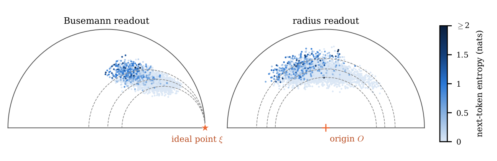
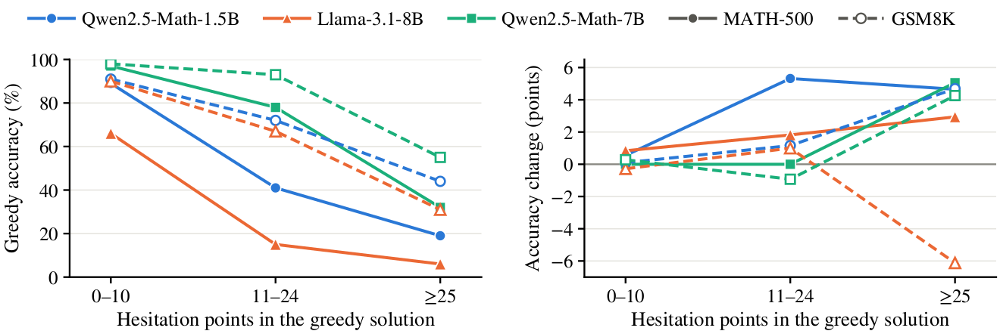

TL;DR
- Motivation. Standard activation steering applies a fixed intervention at every token, while multi-step reasoning is characterized by sparse hesitation points where the model is uncertain.
- Key insight. The model's own next-token entropy provides a label-free signal for identifying these hesitation points and determining where steering is most needed.
- HEST. HEST learns a hyperbolic steering probe from state-entropy pairs and intervenes only at high-entropy tokens, requiring no correctness labels, contrastive prompts, or model retraining.
- Geometric principle. Hyperbolic geometry provides structured steering directions with a provable control guarantee: a geodesic step of length $t$ changes the Busemann readout by exactly $\sqrt{c}\,t$.
- Results. On three instruction-tuned models from the Qwen2.5-Math and Llama-3.1 families, HEST with the Busemann readout improves greedy accuracy on MATH-500 and GSM8K in five of six settings, by up to 1.8 points, whereas a contrastive steering vector added at every token lowers accuracy. With a Euclidean probe trained in the same way, this gain disappears on the development model.
Method
During greedy decoding, after the model reads the token at position $i$, it has a layer-$\ell$ hidden state $h_i$ and a next-token distribution with entropy $H_i$. The entropy comes from logits the model produces anyway, so it needs no annotation. A position with $H_i > \theta$ is a hesitation point. Most positions of a solution are confident, and the solution branches at the few that are not. The same entropy plays two roles: it trains the probe, and it decides where to steer.
HEST edits the hidden state only at hesitation points, re-decodes that one token from the edited state, and leaves every other position unchanged.
A two-layer perceptron $\phi$ followed by the exponential map at the origin embeds hidden states in the Poincaré ball $\mathbb{D}^n_c$ of curvature $-c$:
A readout $s$ is a scalar function on the ball that is low at confident states and high at hesitant ones. The Busemann readout uses a learned ideal point $\xi/\sqrt{c}$ on the boundary of the ball, and the radius readout is the distance to the origin:
- Trained with a pairwise margin loss that orders states by entropy and a triplet loss that keeps nearby states of one solution close; the curvature and the ideal point are learned jointly with $\phi$.
- Training data: the states and entropies of greedy solutions to 100 training problems, without any correctness label.
- On held-out problems, the Busemann readout orders 85 to 90% of the entropy pairs correctly.

At a hesitation point with $z=E(h)$, the steering direction is the negative Riemannian gradient of the readout, and the embedded state moves along the geodesic in that direction by hyperbolic distance $t$:
where $\oplus_c$ is Möbius addition.
Proposition. Let $z'$ be the point above with $t>0$. Then $d_c(z,z')=t$; for the Busemann readout, $b(z')=b(z)-\sqrt{c}\,t$; and for the radius readout, $r(z')=r(z)-t$ whenever $t\le r(z)$.
The step length therefore has the same meaning at every state: it is the hyperbolic distance traveled and fixes the drop of the readout. The two geometries differ in the Busemann readout. In the Poincaré ball, its descent curves are geodesics that converge on the ideal point, so the direction depends on the state. In the Euclidean limit $c\to 0$, the readout becomes a linear function whose descent direction is the same everywhere.
An edit $\Delta h$ with $E(h+\Delta h)\approx z'$ is found by at most four damped Gauss-Newton iterations,
each of which solves one $n\times n$ system with $n=128$. The key and value entries of the hesitating position are removed from the cache, the forward pass of that token is recomputed with $h_i+\Delta h_i$ at layer $\ell$, and the next token is chosen from the new distribution. Later tokens attend to the edited state.
- Layer: taken from prior work (19 for the Qwen models, 13 for Llama).
- Threshold $\theta$: 1 nat for the development model; for the other models chosen without labels so that about as many tokens are steered.
- Step length $t$: 0.5 for the Busemann readout and 0.25 for the radius readout, chosen on the development model and kept for the others.
- Fallback: a steered decode that reaches the limit of 3072 new tokens reports the greedy answer.
Results
Three instruction-tuned models, MATH-500 and GSM8K, greedy decoding with a limit of 3072 new tokens, and one grading protocol for every method. CAA uses the difference of means of the same probe-training states, split at the same threshold, and adds it at every generated token with multiplier 1. With the Busemann readout, HEST improves greedy accuracy in five of the six settings and fixes 88 problems while breaking 63 over all six, whereas CAA lowers accuracy in every setting. HEST steers a median of 0.8 to 3.0% of the tokens of a solution.
| HEST | ||||||
|---|---|---|---|---|---|---|
| Model | Dataset | Greedy | Busemann | radius | CAA | Steered (%) |
| Qwen2.5-Math-1.5B-Instruct | MATH-500 | 74.20 | 76.00+1.80 | 75.20+1.00 | 70.00−4.20 | 1.1 |
| GSM8K | 84.84 | 85.37+0.53 | 84.53−0.30 | 84.23−0.61 | 1.6 | |
| Llama-3.1-8B-Instruct | MATH-500 | 50.80 | 52.00+1.20 | 51.00+0.20 | 38.20−12.60 | 0.8 |
| GSM8K | 84.61 | 84.31−0.30 | 84.53−0.08 | 80.06−4.55 | 3.0 | |
| Qwen2.5-Math-7B-Instruct | MATH-500 | 84.00 | 84.80+0.80 | 84.20+0.20 | 82.60−1.40 | 1.0 |
| GSM8K | 95.38 | 95.60+0.23 | 95.45+0.08 | 95.00−0.38 | 2.0 | |
Accuracy (%) and change from greedy decoding in points. HEST with the Busemann readout uses $t=0.5$, the radius readout $t=0.25$. Steered: median percentage of tokens steered per solution (Busemann). Bold: best accuracy per row.
Problems are grouped by the number of hesitation points in their greedy solution, which is fixed before any intervention. Most problems hesitate little and are already solved: in all six settings the group with at most 10 hesitation points holds 71 to 81% of the problems, HEST breaks almost nothing there, and accuracy changes by at most 0.84 points. The gain per problem grows with hesitation: in the group with at least 25 hesitation points, HEST gains 2.94 to 5.06 points in five of the six settings.

A geometry problem on which the greedy solution of Qwen2.5-Math-1.5B-Instruct is wrong and the HEST solution is right. The greedy solution has 189 tokens, and the next-token entropy exceeds $\theta=1$ at three of them. The first is where the model states which angle is the right angle. Greedy decoding writes $\angle T$, contrary to the diagram, and concludes $\sin T=1$. After HEST steers this token, the model writes $\angle RST$ and reaches $\sqrt{21}/5$. HEST steers 12 of the 583 tokens of its own solution.
Problem (MATH-500, geometry, level 3). In $\triangle RST$, shown, $\sin R=\tfrac{2}{5}$. What is $\sin T$? [Diagram: right angle at $S$; $RT=5$.]
Common prefix. … Given: … $\triangle RST$ is a right triangle with $\angle$? first hesitation point, $H=1.19>\theta$
Greedy decoding
$\angle$$T$$=90^\circ$ … “since $\angle T=90^\circ$, we know that $\sin 90^\circ=1$” … $\boxed{1}$ ✗
HEST: steered at this token
$\angle$$RST$$=90^\circ$ … “$\angle R$ and $\angle T$ are complementary” … $\sin T=\cos R=\boxed{\tfrac{\sqrt{21}}{5}}$ ✓
On Qwen2.5-Math-1.5B-Instruct, each variant changes one component of HEST and keeps the rest (Table 3 of the paper).
- The gate matters. A step of the same size at every token changes MATH-500 accuracy by $-0.20$ points and at the step boundaries by $-0.40$, whereas steering only the hesitation points gains $+1.80$. Only edits at hesitation points yield a gain.
- The geometry matters. A Euclidean probe trained in the same way, the limit $c\to 0$ with the same edit size, predicts entropy at least as well but lowers accuracy with the Busemann readout, by $0.80$ points on MATH-500 and $0.15$ on GSM8K, where HEST gains $1.80$ and $0.53$. The curvature matters most for the Busemann readout, the readout where the two geometries differ.
- The direction matters on the harder benchmark. Under the gate and the small step, a fixed CAA direction matches HEST on MATH-500 but gains only $0.08$ points on GSM8K against $0.53$; the same vector added at every token, as in CAA, lowers MATH-500 accuracy by $4.20$ points.
Citation
If you find HEST useful in your research, please cite the paper:
@article{zhang2026hesitation,
title={Hesitation Has a Geometry: Entropy-Trained Hyperbolic Probes for Sparse Activation Steering},
author={Zhang, Zeyong and Kwok, Tung Sum Thomas and Ma, Tengfei and Xu, Mengjia},
journal={arXiv preprint arXiv:2610.02391},
year={2026}
}